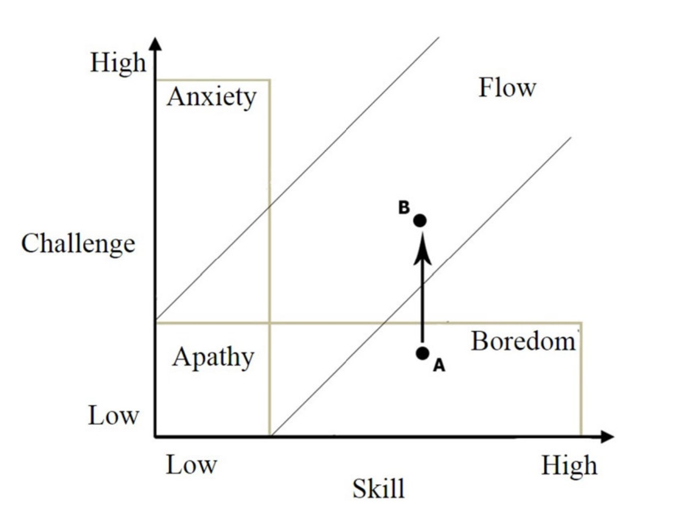
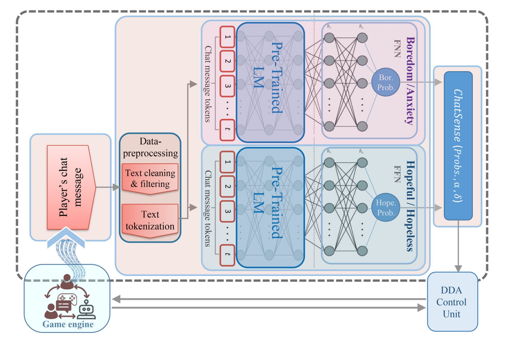

رویکردی عاطفی دو بعدی برای تنظیم پویای سختی بر اساس تحلیل چت بازیکنان
حفظ تعادل کامل بین چالش بازی و سطح مهارت بازیکن، سنگ بنای یک طراحی بازی عالی است. در آخرین مقاله پژوهشیام، روشی نوآورانه برای تنظیم پویای سختی بازی با تحلیل معناییِ پیامهای چت بازیکنان معرفی کردهایم.
چالشهای سیستمهای DDA سنتی
سیستمهای تنظیم پویای سختی (DDA) به طور سنتی بر تجهیزات ضبط فیزیولوژیک (مانند EEG یا ضربانسنج) برای تشخیص وضعیت عاطفی بازیکن تکیه دارند. اگرچه این روشها موثر هستند، اما تهاجمی، گرانقیمت و برای عموم بازیکنان غیرقابل دسترسی میباشند. سایر روشها نیز به مکانیکهای خاص هر سبک بازی یا پرسشنامههای آزاردهنده حین بازی وابسته هستند. ما به دنبال جایگزینی مقرونبهصرفه و مستقل از سبک بازی بودیم.
راهکار پیشنهادی ما: تحلیل چت با هوش مصنوعی
با استفاده از پردازش زبان طبیعی پیشرفته (NLP)، ما چارچوبی طراحی کردیم که چتهای حین بازی را برای استخراج ادراک بازیکن از سختی بازی تحلیل میکند. بر اساس نظریه «غرقگی» (Flow)، ما بر ارزیابی احساسات بازیکن در دو بعد مجزا تمرکز کردیم:
- امید و ناامیدی: آیا بازیکن انتظار پیروزی دارد یا احساس شکست میکند؟
- اضطراب و کسالت: آیا چالش بازی بیش از حد است یا روند بازی خیلی کند پیش میرود؟

روششناسی و نتایج
ما دو مجموعه داده بزرگ را بر اساس تعاملات واقعی بازیکنان در بازی Dota 2 گردآوری و برچسبگذاری کردیم. برای این کار از مدل زبانی Twitter-RoBERTa-base استفاده کردیم که به خوبی برای درک زبان غیررسمی و اصطلاحات خاص بازیهای آنلاین بهینه شده است.
الگوریتم نوآورانه ما تنها زمانی تغییرات سختی را اعمال میکند که ترکیبات عاطفی خاصی شناسایی شوند (به عنوان مثال، افزایش سختی زمانی که امید بالا و کسالت بالا همزمان تشخیص داده شوند). این کار باعث کاهش خطاهای سیستم و اطمینان از تنظیم دقیق سختی میشود.
نتایج: مدلهای ما به دقت خیرهکننده بیش از ۹۷٪ در شناسایی امید/ناامیدی و بیش از ۹۸٪ برای اضطراب/کسالت دست یافتند. همچنین تاخیر پردازش بسیار ناچیز (حدود ۲.۳ میلیثانیه برای هر پیام) نشان داد که این روش برای بازیهای پرجمعیت کاملاً مقیاسپذیر و آماده اجراست.

مطالعه متن کامل مقاله
اگر به جزئیات فنی، الگوریتمها یا ارزیابیهای جامع مجموعه داده علاقهمند هستید، میتوانید از طریق لینک زیر در انتشارات Taylor & Francis به متن کامل مقاله دسترسی داشته باشید:
مطالعه مقاله در ژورنال IJHCI